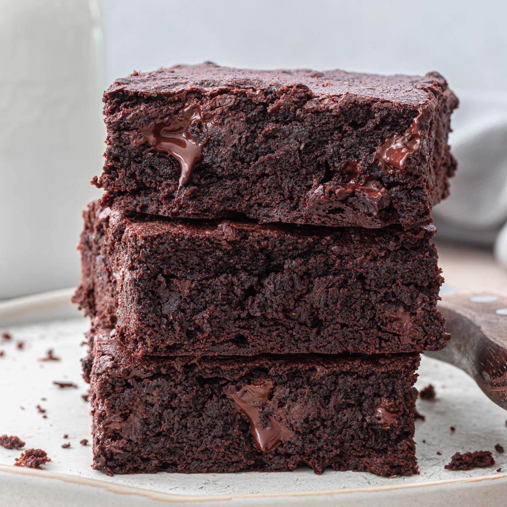

Chocolate Brownie

Descrpition
A chocolate brownie or simply a brownie is a chocolate baked confection.
Brownies come in a variety of forms and may be either fudgy or cakey,
depending on their density. Brownies often, but not always, have a glossy
"skin" on their upper crust.
Ingridients
- ½ cup unsalted butter, plus additional for greasing pan
- ⅓ cup cocoa powder
- 1 cup granulated sugar
- 2 teaspoons vanilla extract
- 2 large eggs
- ½ cup all-purpoese flour
Directions
- Heat oven to 350 degrees F (175 degrees C). Coat an 8x8-inch
metal baking dish with butter.
- Melt butter in a large saucepan over low heat. Remove from
heat and let cool for 5 minutes. Whisk in cocoa powder, sugar,
and vanilla extract. Stir in eggs, 1 at a time until incorporated.
Add flour and stir until just combined. Scrape mixture into the
prepared pan and smooth the top.
- Bake in the preheated oven until a toothpick inserted comes out
clean, 20 to 25 minutes.
- Remove from the oven and cool on a wire rack for at least 45
minutes before cutting.